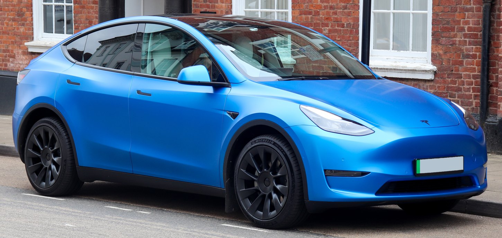
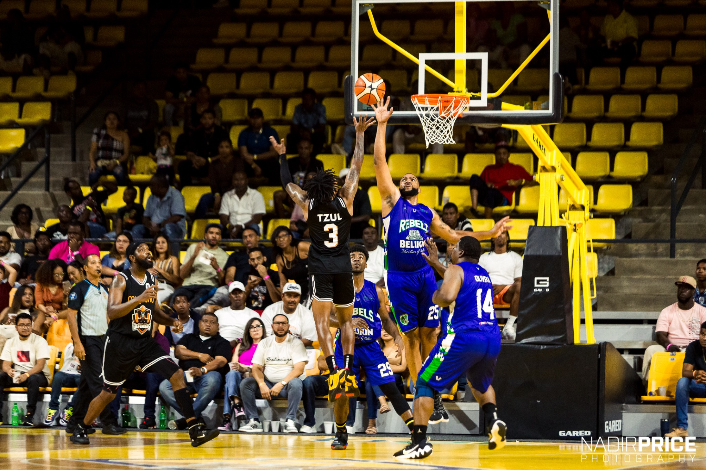
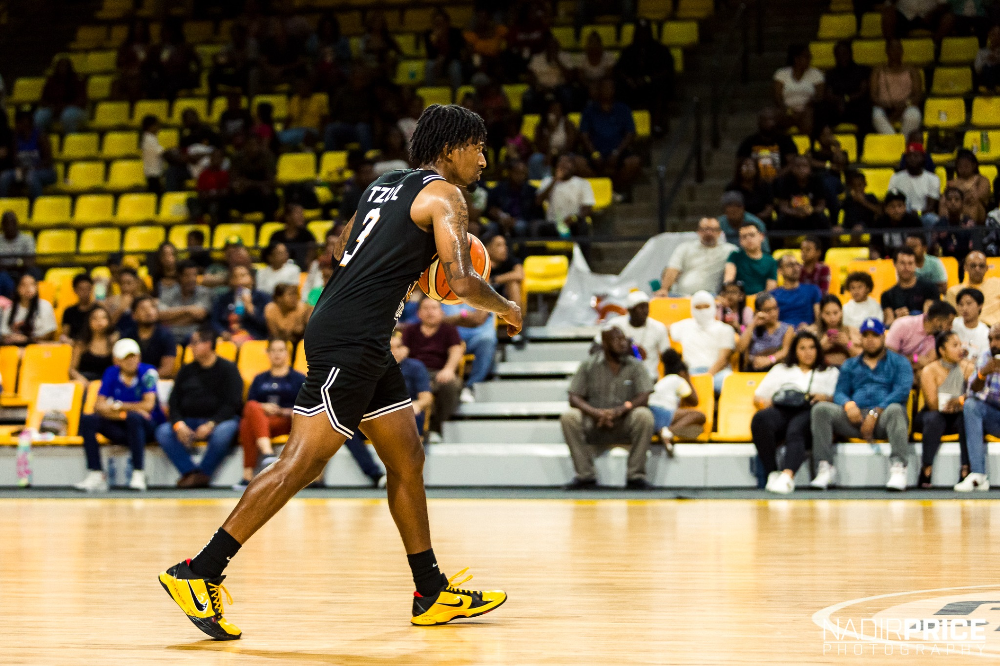

PayWorld
Follow my fictional vanilla cappuccino purchase through the four-party model. Step through Visa network routing, duplicate requests, timeouts, settlement, and refunds.
FORMER PRO HOOPER • VISA CONSULTING & ANALYTICS
Client Consulting Analyst @ Visa | AI/ML - Data Science & Analytics
I build predictive models, data tools, and interactive apps in payments, sports, and everyday life.
Client Consulting Analyst @ Visa | AI/ML - Data Science & Analytics
About
From NYC with Belizean roots, I've lived and competed across four continents. Playing professional basketball taught me discipline, composure, and how to perform under pressure—lessons I apply every day as a data professional.
At Visa Consulting & Analytics, I help merchants optimize payment systems through data-driven insights. That work drew me toward building models and finding patterns that help people make decisions.
Outside work, I build tools for basketball analytics and household planning.
Follow my fictional vanilla cappuccino purchase through the four-party model. Step through Visa network routing, duplicate requests, timeouts, settlement, and refunds.
 Predictive ML
Predictive ML
Forecasts points, rebounds, and assists for five NBA players. I evaluated Ridge regression on later games and compared it with a recent-games average.
 Computer vision
Computer vision
Applies YOLOX person detection and player tracking to basketball footage. The film room pairs clips from my playing days with tracking overlays and downloadable data.
Maps NASA satellite heat detections across California. An automated pipeline validates the feed, joins readings to counties, and publishes a snapshot with freshness timestamps.

Route optimizationCompares time-first and cost-first EV charging stops using road routes, a public charger catalog, and a battery reserve. Includes a range simulator and ownership cost tools.
Inspired by my Achilles rupture. Uses MediaPipe in the browser to estimate heel raises and compare sessions. Video stays on the device.
Estimates Knicks win probabilities before tipoff and grades saved picks against final scores. A historical test compares the model with a home-court baseline.
Turns confirmed film observations into a seven-day basketball workout plan, with timestamped evidence and a drill retest log.
 Tourism and geospatial analytics
Tourism and geospatial analytics
Explore Belizean destinations and cuisine, compare tourism trends, and inspect census data on a six-district map.
Model Y photo by Vauxford, CC BY-SA 4.0, resized and cropped for display.
Professional Basketball Overseas





What I’m Building
Current Role: Client Consulting Analyst at Visa Consulting & Analytics, helping retail merchants optimize digital payment ecosystems through data-driven strategic recommendations.